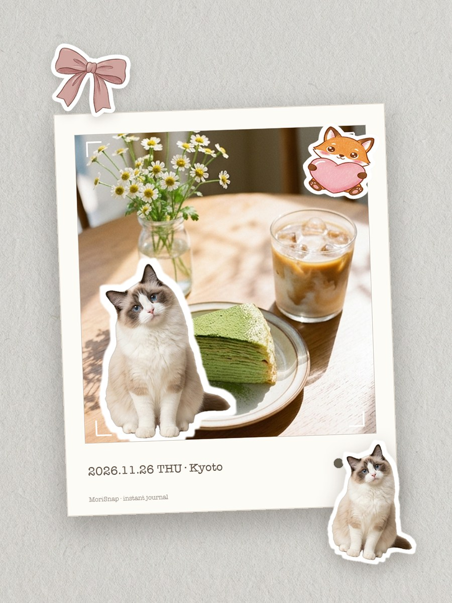
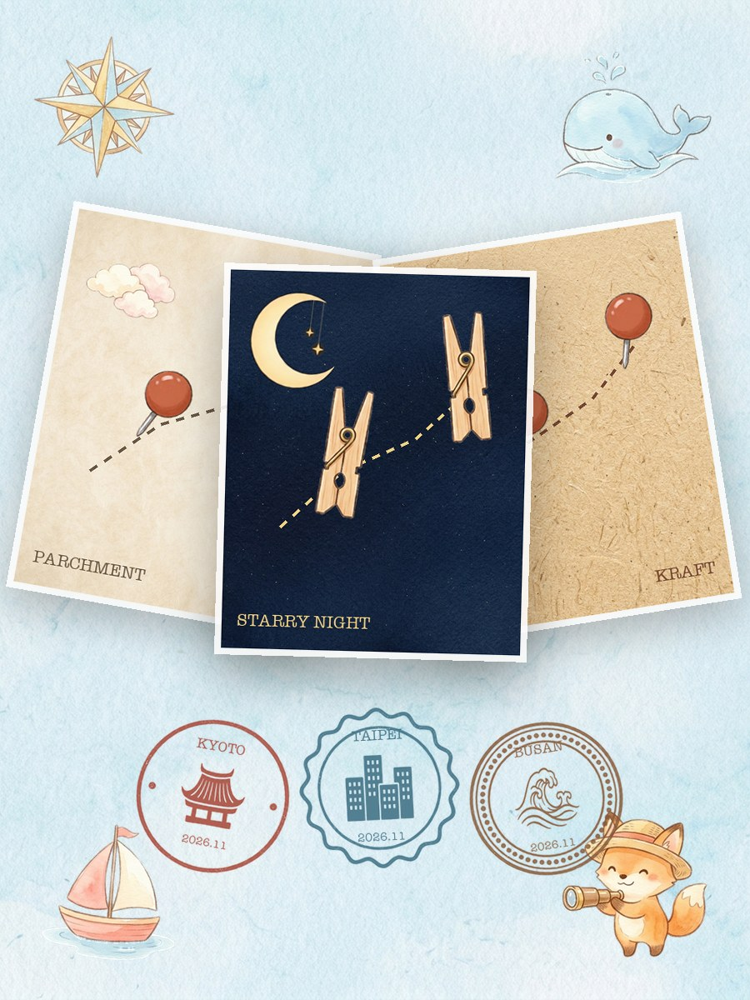
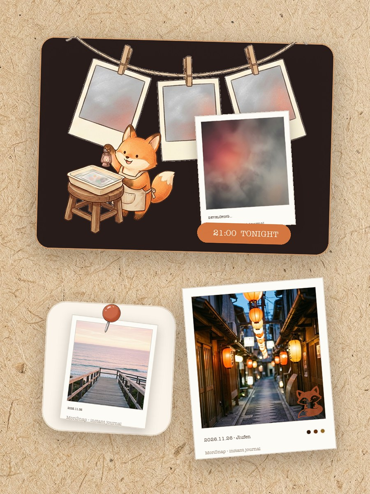

懶得修也沒關係，隨手一拍就好。
MoriSnap 是給「很想記錄、又很懶」的人的拍照手帳：按一下快門就自動完成溫暖濾鏡、插畫貼紙、心情戳印與日期，週末還能自動剪成對拍小電影。

📸 隨手一拍，就是這樣的手帳質感
左右滑動預覽 MoriSnap 1.0 的 6 大招牌玩法（內建棉紙底、1,200+ 插畫貼紙、26 款動態日期與 4 種地圖風格）






3 支小短片，5 秒看懂有多好玩！
Photo Dump 對拍小電影（免費範本）
不用剪片！自動挑選精華照片、配上棉紙底與飄落小貼紙，每張照片精準踩在原創輕音樂的重拍上切換，一鍵就能匯出 1080p 分享。
大部分的日子都很普通。早餐、回家路上的天空、在陽光下打盹的貓。當下覺得沒什麼，回頭看才發現都很可愛。
MoriSnap 想幫你留下這些日子——不用修圖、不用想構圖。自己收藏、只給最親近的朋友看、或是發到社群，都由你決定。
懶得修也沒關係，隨手一拍就好。🦊
暖色底片濾鏡、手撕紙邊框、26 款動態日期與季節插畫貼紙一次配好，不滿意就搖一搖換一組。
不用剪輯，內建對拍 Photo Dump 範本與自動挑精華，把一週或一個月變成帶原創配樂的 1080p 小短片。
免費建立 iCloud 共享手帳，邀請最在乎的人把照片存進同一本相簿，免帳號、無公開動態牆。
小狐狸吉祥物、美食、毛孩、復古童年與 19 節日季節限定插畫貼紙，隨節日自動驚喜出沒。
免註冊、零廣告、零追蹤，沒有開發者伺服器；匯出與分享的照片不夾帶 GPS 位置。
免費版也完全沒廣告、不限拍照張數；想解鎖全部貼紙與進階風格只要一次買斷，絕不訂閱扣款。

只要你是 VIP，我們都接受許願！
有超想要的貼紙主題（毛孩、宵夜、冷門運動或懷舊小物）、濾鏡色調，或是讓你拍照更順手的小功能嗎？寫信告訴小狐狸，我們都會認真看、努力幫你放進未來的免費更新裡！
Too lazy to edit? That's okay. Just snap.
MoriSnap is a cozy photo diary for lazy days: one tap makes a finished scrapbook card with warm film tones, illustrated stickers, mood stamps, and dates — and every week turns into a beat-synced little movie.
📸 One Tap, Ready for Your Journal
Swipe through 6 signature MoriSnap 1.0 moments — cotton papers, 1,200+ stickers, 26 date stamps & 4 map styles
3 Quick Clips — See the Magic in 5 Seconds
Beat-Synced Photo Dump Movie (Free)
Zero editing! MoriSnap picks your sharpest highlights, lays them on cotton paper with gently falling stickers, and locks every cut to the exact beat of original lofi music.
Most days are quiet, ordinary days. Breakfast, the sky on the way home, the cat asleep in the sun. They don't seem like much, until you look back and find them lovely.
MoriSnap helps you keep those days — no editing, no overthinking. Keep them to yourself, share them with a few close friends, or post them online. Any way is fine.
Too lazy to edit? That's okay. Just snap. 🦊
Warm film tones, torn-paper frames, 26 live date stickers and seasonal art added for you. Shake to shuffle.
Zero editing. Free beat-synced Photo Dump & auto-pick highlights turn your week or month into a 1080p film.
Create a free iCloud shared album and invite close friends so everyone's moments land in the same book.
Little Fox mascot, food, pets, retro childhood items, and 19 seasonal sets picked for each day.
No account, no ads, no tracking, and no developer servers. Exported photos never carry GPS coordinates.
Even the free version has zero ads and unlimited shots — unlock every sticker & pro style with a one-time purchase.
VIP member? We take wishes!
Dreaming of a specific sticker theme (your pet breed, favorite snack, sport, or nostalgic trinket), filter tone, or handy tweak? Send your wish to Little Fox — we read every note and love bringing VIP wishes into future free updates!
加工がめんどうでも大丈夫。パッと撮るだけ。
「残したいけど、加工や編集はめんどう」な日のための写真日記カメラ。シャッター1回でフィルム調・ステッカー・木製スタンプ・日付まで自動仕上げ、週末はリズムに合うショートムービーに。
📸 パッと撮るだけで、こんな手帳ページに
左右にスワイプして MoriSnap 1.0 の人気機能 6 選をチェック！
5 秒でわかる！たのしいミニ動画 3 本
リズム連動フォトダンプ動画（無料）
編集いらず！自動でハイライト写真を選び、棉紙ベースと舞い落ちるステッカーを乗せて、オリジナル BGM の拍子にぴったり合わせて 1080p 書き出し。
毎日は、ほとんどがなんでもない日。朝ごはん、帰り道の空、ひなたで眠る猫。そのときは気にならないけれど、見返すと、どれも愛おしい。
MoriSnap はそんな毎日を残すお手伝いをします。自分だけでとっておいても、仲のいい友だちと共有しても、SNS に載せても自由。
加工がめんどうでも大丈夫。パッと撮るだけ。🦊
あたたかいフィルム色、紙フチ、26 種の自動日付と季節ステッカーが自動で。振れば別セットに変更。
編集不要。無料のリズム連動フォトダンプと自動ハイライト選択で 1080p 動画が完成。
iCloud で友だちを招待するだけの完全無料共有アルバム。アカウント登録も公開フィードもなし。
森の子ぎつね、グルメ、ペット、レトロ雑貨、19 の季節限定イラストまで盛りだくさん。
アカウント登録なし・広告ゼロ・独自サーバーなし。シェア時の写真に GPS 座標は含まれません。
無料版も広告ゼロ・撮影無制限。VIP は一度の買い切りで全ステッカーと上位機能がずっと使えます。
VIP の方は、いつでもリクエスト歓迎！
ほしいイラストステッカーのテーマやフィルター色味、ちょっとした改善アイデアがあればメールで子ぎつねに教えてください。今後の無料アップデートで形にしていきます！
보정이 귀찮아도 괜찮아요. 툭 찍기만 하면 돼요.
기록은 하고 싶지만 보정과 편집이 귀찮은 날을 위한 감성 사진 일기 카메라. 셔터 한 번이면 따뜻한 필름 색감, 일러스트 스티커, 나무 도장과 날짜까지 자동 완성되고 주말엔 비트 싱크 미니 영화가 만들어져요.
📸 툭 찍으면 바로 이런 감성 다이어리
좌우로 넘겨 MoriSnap 1.0의 대표 기능 6가지를 미리 만나보세요!
5초 만에 보는 재미있는 미니 영상 3편
비트 싱크 포토 덤프 영상 (무료)
편집 없이 끝! 하이라이트 사진을 자동으로 골라 코튼지와 흩날리는 스티커를 얹고, 오리지널 음악 비트에 맞춰 1080p 영상으로 완성해 줘요.
하루하루는 대부분 평범한 날이에요. 아침밥, 퇴근길 하늘, 햇살 아래 잠든 고양이. 그때는 별것 아닌 것 같아도 돌아보면 하나하나 다 소중해요.
MoriSnap은 그런 날들을 남겨두도록 도와줘요. 나만 간직해도, 친한 친구들에게만 보여줘도, SNS에 올려도 다 좋아요.
보정이 귀찮아도 괜찮아요. 툭 찍기만 하면 돼요. 🦊
따뜻한 필름 색감, 종이 테두리, 26종 자동 날짜와 계절 일러스트 스티커까지 자동으로. 흔들면 새 조합!
편집 필요 없이 무료 포토 덤프와 하이라이트 자동 선택으로 1080p 감성 영상을 뚝딱 만들어요.
iCloud 링크로 초대하는 완전 무료 공유 앨범. 회원가입도 공개 피드도 없이 프라이빗하게 함께 써요.
아기 여우 마스코트, 음식, 반려동물, 레트로 소품, 19가지 계절 한정 스티커까지 풍성하게 담았어요.
가입 없음·광고 0·자체 서버 없음. 공유한 사진에는 GPS 위치 정보가 절대 포함되지 않아요.
무료 버전도 광고 없이 무제한 촬영 가능! VIP는 딱 한 번만 결제하면 모든 스티커와 기능을 평생 써요.
VIP라면 무엇이든 소원 받아요!
갖고 싶은 일러스트 스티커 테마나 필터 색감, 편리한 기능 아이디어가 있다면 아기 여우에게 메일로 보내주세요. 하나하나 꼼꼼히 읽고 앞으로의 무료 업데이트에 담아볼게요!